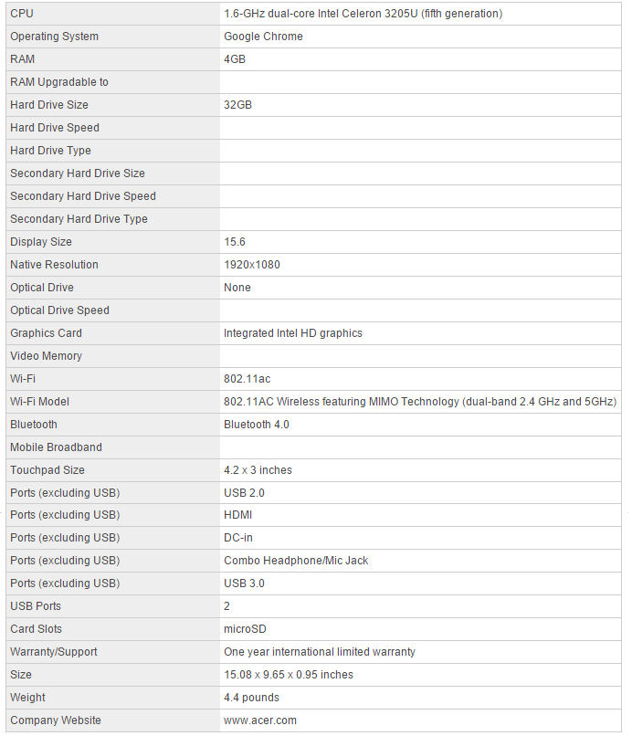
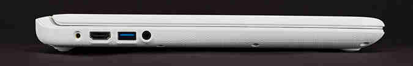
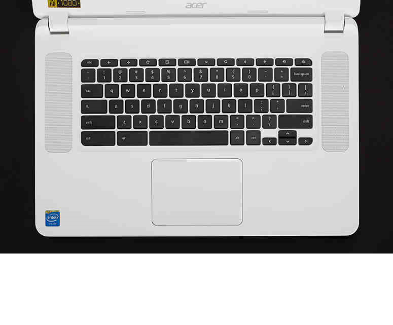
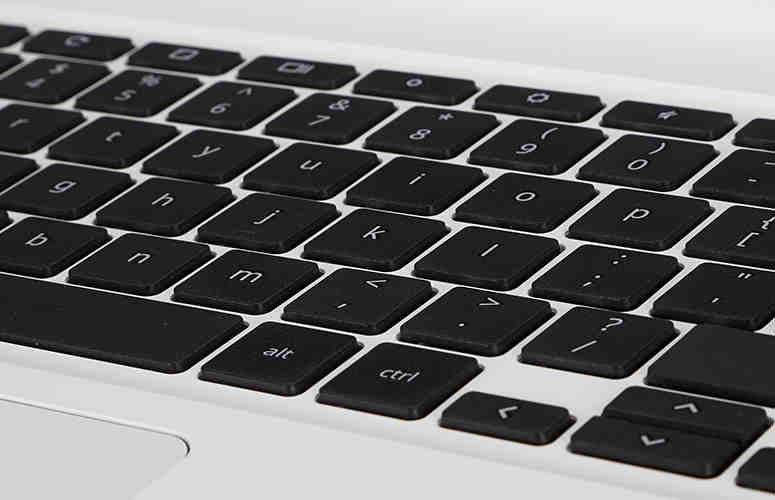

Laptop Lounge
Acer Chromebook 15 Review
Editor's Rating:
The Pros
Best-in-class performance; Long lasting battery; Solid, sturdy build; Affordable; Loud speakers
The Cons
Dull display; Relatively large for a Chromebook
Verdict
Supersizing the Chrome OS experience, the Chromebook 15 offers a large 15-inch screen, a zippy fifth-generation Intel CPU and long battery life.
Specifications
Design
The plastic Chromebook 15 feels pretty sturdy - like give-it-to-your-kid-sturdy - and it's covered with a woven texture for a better grip. On the top left of the laptop's white back is a Chrome logo, while a silver Acer logo sits below that. The system comes in white or black; the white model looks sleeker but the black version looks like it will stain less easily.

Under the lid is the Chromebook 15's black island-style keyboard on a white deck flanked by two large speakers. A generously sized touchpad sits below it, centered to the G and H keys. Facing the keyboard is a 15.6-inch display with anti-glare coating, and a 720p webcam above it.

With its 15.1 x 9.7 x 0.95-inch profile, the Chromebook 15 is larger and thicker than the 13-inch Toshiba Chromebook 2 (12.6 x 8.4 x 0.76 inches), the 13-inch Samsung Chromebook 2 (12.72 x 8.80 x 0.65 inches) and the 14-inch HP Chromebook 14 (13.56 x 9.44 x 0.81 inches).
Keyboard and Touchpad
I didn't have much trouble chatting with my friends or firing out emails with the Chromebook 15. Its island-style black keys with white lettering are amply spaced and comfortable to type on. With a depth of 1.3 mm, the Chromebook 15's keys are shallower than the HP Chromebook 14's 1.5 mm, but it offers more travel than the Toshiba Chromebook 2 (1.2 mm) and the Samsung Chromebook 2 (1.1 mm).
On the KeyHero typing test, I scored an average of 105.18 words per minute with 96.8 percent accuracy, slightly less than my desktop average (113.40 wpm; 98.5 percent accuracy).
Like on other Chromebooks, the top row has keys for functions such as back, forward, refresh, full screen, window switcher, brightness, volume and power. As a lover of keyboard shortcuts, though, I missed the Home, Page Up, Page Down, Delete keys that you get on most Windows keyboards.
Display
Although the Chromebook 15's 1080p screen is plenty large, it doesn't offer a great picture. Watching movies and TV shows was underwhelming. When viewing the HD trailer for The Avengers Age of Ultron, Captain America's shield looked clear, but the blue sky and orange flames looked muted.
Viewing angles were fairly decent, with image quality degrading slightly when I moved beyond 45 degrees. Despite its anti-glare coating, the screen still reflected some overhead lights during a dark scene in the Avengers trailer, making it hard to see.
Notching 228 nits on our brightness meter, the Chromebook 15 is dimmer than the average mainstream laptop (251 nits) and the Toshiba Chromebook 2 (339 nits), but brighter than the Samsung Chromebook 2 (214 nits) and the HP Chromebook 14 (209 nits).
Audio
You won't have to strain to hear the dialogue in your favorite TV show on the Chromebook 15, thanks to its booming, upward-facing speakers. I easily heard a hushed discussion between Cookie and Lucious Lyon on Empire as I sat back in my chair. One Direction's "Night Changes" was almost deafening at max volume, and while there was no distortion in the instruments and Harry Style's voice, the song echoed and sounded somewhat hollow at that level.
Performance
Thanks to its fifth-generation 1.6-GHz dual-core Intel Celeron 3205U CPU, the Chromebook 15's performance is fast and furious. I was impressed to see how quickly pages, tabs and apps opened on the Chromebook 15. The laptop whizzed along smoothly as I chatted with several friends, watching an episode of Empire on Hulu while running a browser test in the background.
Booting to Chrome OS in just 5.3 seconds, the Acer Chromebook 15's 32GB SSD beat the Toshiba Chromebook 2's 16GB SSD (8 seconds), the HP Chromebook 14's 16GB SSD (6 seconds) and the Samsung Chromebook 2's 16GB flash drive (6 seconds).
Bottom Line
If you're looking for a simple laptop that works well, and don't need to carry it everywhere, the Acer Chromebook 15 is a solid investment. Its large display is good for Web surfing and working on spreadsheets, and its speedy performance makes it a dependable device for productivity. The loud speakers and long-lasting battery are other pluses. I just wish the screen were brighter and more colorful. Although it has a 13-inch smaller screen and isn't as fast, we prefer the Toshiba Chromebook 2 ($329) because its IPS display is richer.
There are also good Windows laptops that you can buy for less than the Chromebook 15. For instance, the HP Stream 13 offers smooth Windows 8 performance in a colorful design for just $217, offering access to a lot more apps. However, the HP lasted 2.5 hours less on a charge. You could also pick up a Celeron-powered Dell Inspiron 15 with a 320GB hard drive for $310. But if you prefer the simplicity of the Chrome OS married with a big display, the Acer Chromebook 15 offers plenty for your money.